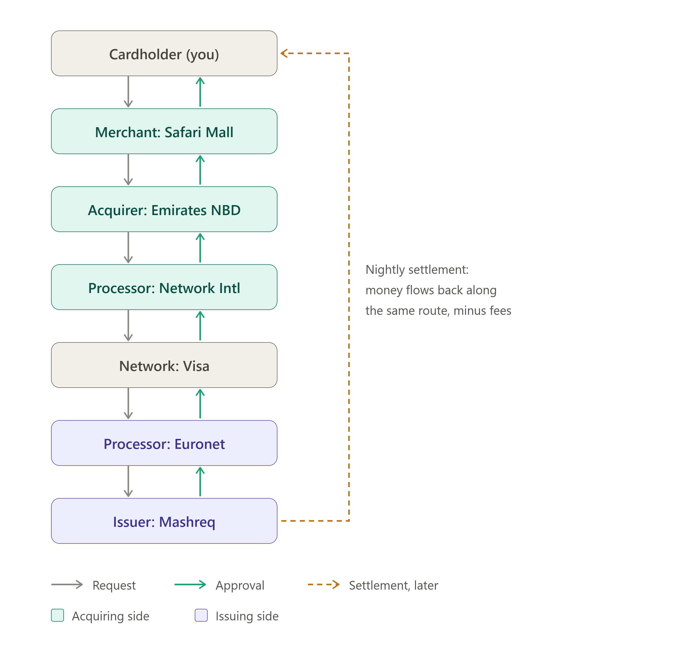
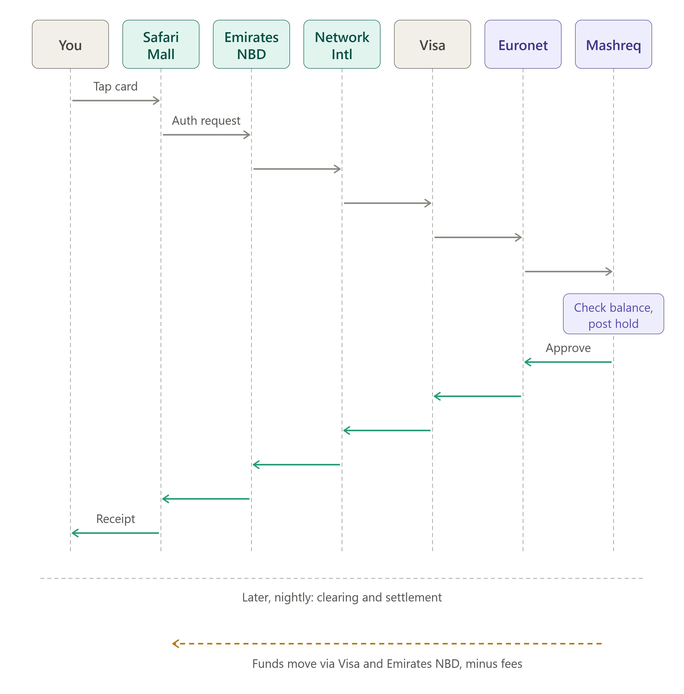

You pay with your Mashreq Visa card at Safari Mall for 100 AED. In under two seconds the terminal says Approved, but the money only moves the next day. This note follows that one transaction through two banks, two different card processors and one card network.
Seven parties take part in one payment. The two processors are separate companies, and neither of them owns the banks it works for.
| Role | Party | What it does in this transaction |
|---|---|---|
| Cardholder | Al Mamun | Pays 100 AED with a Mashreq Visa debit card |
| Merchant | Safari Mall | Owns the POS terminal and receives the money |
| acquirer Acquiring bank | Emirates NBD | Holds Safari Mall's merchant account and takes the settlement risk for the merchant |
| acquirer Acquirer processor | Network International | Runs the terminals, the payment switch and the Visa connection for Emirates NBD |
| Card network | Visa (VisaNet) | Routes messages by card number (BIN), runs clearing and settlement, sets the rules |
| issuer Issuer processor | Euronet | Hosts Mashreq's card system: card checks, EMV cryptograms, PIN, authorization logic |
| issuer Issuing bank | Mashreq | Owns the cardholder's account, gives the final yes/no and carries the credit risk |
Banks outsource card processing because running a PCI DSS-certified switch, HSMs and a 24/7 network connection is expensive. Each bank picks its own vendor:
This is the main difference from an "on-us" transaction, where card and terminal belong to the same bank and processor and the request may never leave that processor's switch.
A card payment is not one event. It happens in three separate phases at three different times.
| Phase | When | What moves | Result |
|---|---|---|---|
| 1 · Authorization | At the till, ~1–2 s | Messages only | Issuer approves and puts a 100 AED hold on the account |
| 2 · Clearing | End of day (T+0 night) | Transaction records (files) | Issuer turns the hold into a posted debit |
| 3 · Settlement | T+1 (next business day) | real money | Issuer pays Visa, Visa pays acquirer, acquirer pays merchant |
ACQUIRER SIDE NETWORK ISSUER SIDE
┌──────────┐ ┌──────────────┐ ┌───────────────────┐ ┌──────────┐ ┌──────────┐
│ Safari │→ │ Network Intl │→ │ │→ │ Euronet │→ │ Mashreq │
│ Mall POS │ │ (acq. proc.) │ │ Visa (VisaNet) │ │ (iss. │ │ (issuing │
│ │← │ for Emirates │← │ │← │ proc.) │← │ bank) │
└──────────┘ │ NBD │ └───────────────────┘ └──────────┘ └──────────┘
└──────────────┘
Authorization: request →→→→→→→→→→→→→→→→→→→→→→→→→→→→→→→→→→→→ approve ←←←←
Clearing: Network Intl sends the record to Visa, Visa sends it to Euronet
Settlement: Mashreq ──AED──▶ Visa settlement account ──AED──▶ Emirates NBD ──▶ Safari Mall

Every hop speaks a dialect of ISO 8583. The request is an 0100 (or 0200 for single-message debit) and the response is an 0110.
The cardholder inserts the card and enters the PIN. The chip and the terminal run the EMV transaction:
The terminal is registered to Emirates NBD but physically connects to Network International's switch. Network International:
0100 message.# ISO 8583 authorization request — sent by Network International to Visa MTI 0100 # authorization request DE 2 4xxxxx******1234 # PAN (masked here) DE 3 000000 # processing code: purchase from default account DE 4 000000010000 # amount 100.00 (minor units, 2 decimals) DE 7 1018143205 # transmission date/time (MMDDhhmmss, GMT) DE 11 482913 # STAN — system trace audit number DE 22 051 # POS entry mode: chip read, PIN entered DE 32 4xxxxx # acquiring institution ID (Emirates NBD) DE 37 629114482913 # RRN — retrieval reference number DE 41 SFM00017 # terminal ID DE 42 SAFARIMALL0001 # merchant ID DE 43 SAFARI MALL SHARJAH AE # merchant name / location DE 49 784 # transaction currency: AED DE 52 [encrypted PIN block] DE 55 [EMV data incl. ARQC]
0100 to Euronet's VisaNet endpoint.Euronet acts for Mashreq and runs the card-level checks in its HSMs and authorization engine:
What happens next depends on how Mashreq set up the integration:
| Model | Who checks the balance | Typical for |
|---|---|---|
| Online to core banking | Euronet calls Mashreq's core banking or card management API, and Mashreq checks the account and places the hold | Debit cards (money sits in a current account) |
| Processor-hosted balance | Euronet keeps the open-to-buy or credit limit and decides alone; Mashreq gets the result in a file or feed | Credit and prepaid cards |
DE 38 = 7Q2K9B and response code DE 39 = 00 (approved).Ledger balance 5,000.00 AED # unchanged Holds 100.00 AED # SAFARI MALL — pending — auth 7Q2K9B Available balance 4,900.00 AED # what the mobile app shows as "available"
The 0110 goes back the same way: Mashreq → Euronet (adds ARPC) → Visa → Network International → terminal. Network International stores the approved transaction in its transaction log, because it will need it for clearing tonight. The terminal shows Approved and prints the receipt.
Terminal → Network Intl ~150 ms # 4G/broadband from the mall
Network Intl processing ~30 ms
Network Intl → Visa → Euronet ~80 ms
Euronet checks + HSM ~40 ms
Euronet → Mashreq core → Euronet ~150 ms
Return path to terminal ~250 ms
──────────────────────────────────────────
Total ~0.7 – 1.5 s

Authorization only reserved the money. Clearing is when the acquirer says: "this sale really happened, here is the final amount."
Ledger balance 4,900.00 AED # now debited Holds 0.00 AED # hold 7Q2K9B released Available balance 4,900.00 AED # unchanged for the customer
Visa does not move 100 AED by itself. It nets every bank's position for the day and moves one amount per bank through settlement accounts. Processors only provide data and reports; they never hold the funds.
Illustrative split, assuming a 2.0% MDR and 1.5% interchange. Real rates depend on card type, MCC and contract.
| Party | Amount | Why |
|---|---|---|
| Cardholder | −100.00 AED | Pays the full purchase price |
| issuer Mashreq | +1.50 AED | Interchange: Mashreq sends Visa 98.50 and keeps 1.50 for carrying the risk and funding the cardholder |
| issuer Euronet | ~0.05–0.15 AED | Per-transaction processing fee, invoiced to Mashreq monthly, not taken from the flow |
| Visa | ~0.05–0.15 AED | Scheme and network fees, billed separately to both banks |
| acquirer Emirates NBD | +0.50 AED | Receives 98.50 from Visa, pays the merchant 98.00, keeps the difference (before its own costs) |
| acquirer Network International | ~0.05–0.15 AED | Per-transaction and terminal fees, invoiced to Emirates NBD |
| Merchant | +98.00 AED | 100.00 minus 2.0% MDR |
Cardholder ──100.00──▶ Mashreq ──98.50──▶ Visa ──98.50──▶ Emirates NBD ──98.00──▶ Safari Mall
│ │
└─ keeps 1.50 interchange └─ keeps 0.50 (MDR − interchange)
Off the flow (monthly invoices): Euronet ──bills──▶ Mashreq Network Intl ──bills──▶ Emirates NBD
Visa ──scheme fees──▶ both banks
The same 100 AED, recorded as double-entry bookkeeping at each bank.
| When | Bank | Debit | Credit | Amount |
|---|---|---|---|---|
| Auth | Mashreq | Hold only (memo entry, no GL posting) | 100.00 | |
| Clearing | Mashreq | Cardholder account | Visa settlement payable | 100.00 |
| Clearing | Mashreq | Visa settlement payable | Interchange income | 1.50 |
| Settlement | Mashreq | Visa settlement payable | Settlement / nostro account | 98.50 |
| Clearing | Emirates NBD | Visa settlement receivable | Merchant payable | 98.50 |
| Settlement | Emirates NBD | Settlement / nostro account | Visa settlement receivable | 98.50 |
| Payout | Emirates NBD | Merchant payable | Safari Mall account | 98.00 |
| Payout | Emirates NBD | Merchant payable | MDR income | 0.50 |
Having two processors means two more places where a message can get lost. The system is designed so that the cardholder is never charged for a sale that did not happen.
Mashreq approved and placed the hold, but the 0110 was lost between Visa and Network International. The terminal shows Declined / No response.
0400) with the same STAN and RRN.If Euronet or Mashreq's core banking does not reply in time, Visa can decide for Mashreq using Stand-In Processing limits that Mashreq set in advance (for example, approve up to 500 AED if the card is not blocked). Visa then sends the stand-in decision to Euronet as an advice (0120) when the connection comes back, so Mashreq can place the hold afterwards.
Wrong PIN (55), insufficient funds (51), expired card (54) or suspected fraud (59). No hold, no clearing, no money moves. Only a decline record is kept for fraud analytics.
Author: Al Mamun